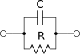
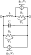
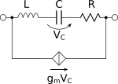
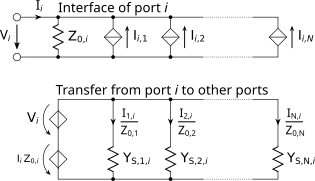
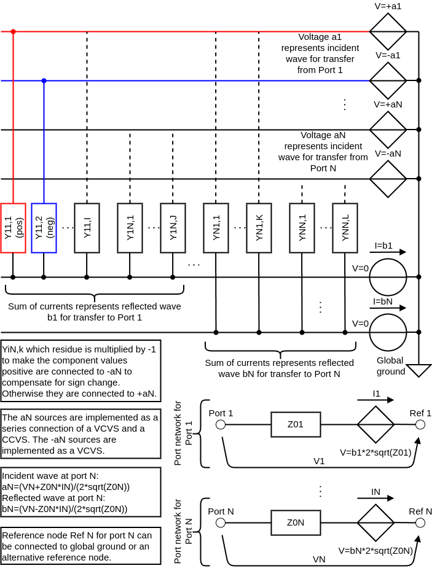
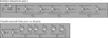
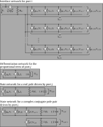

Vector Fitting#
This is a brief introduction to Vector Fitting. The concept and its algorithm was proposed in 1999 by Bjørn Gustavsen and Adam Semlyen [1]. See the Vector Fitting website for more information [2]. The main application of Vector Fitting is to model the original sampled frequency responses of an active or passive device in a circuit simulator. Also see the API documentation and the application examples for more information about the implementation in scikit-rf.
Mathematical Description#
The idea of Vector Fitting is to fit a set of rational model functions to a set of sampled frequency responses \(\mathbf{\underline{H}}_\mathrm{sampled}\), for example from a S, Y or Z matrix. The model function \(\mathbf{\underline{H}}(\mathrm{\underline{s}})\) is defined in the Laplace domain with \(\mathrm{\underline{s}} = \sigma + \mathrm{j} \omega\): \begin{equation} \mathbf{\underline{H}}(\mathrm{\underline{s}}) = \mathbf{d} + \mathrm{\underline{s}} \mathbf{e} + \sum_{k=1}^K \frac{\underline{\mathbf{c}}_{k}}{\mathrm{\underline{s}}-\underline{p}_k} \end{equation}
For the desired fit, that model function shall match the given frequency responses at each of its frequency samples \(\omega_n\): \begin{equation} \mathbf{\underline{H}}(\mathrm{\underline{s}} = \mathrm{j} \omega_n) \overset{!}{=} \mathbf{\underline{H}}_\mathrm{sampled}(\omega_n) \end{equation}
Generally, \(\mathbf{\underline{H}}(\mathrm{\underline{s}})\) is a vector holding the individual complex frequency responses \(\underline{H}_1(\mathrm{\underline{s}})\), \(\underline{H}_2(\mathrm{\underline{s}})\), …, \(\underline{H}_M(\mathrm{\underline{s}})\) of the model. All elements in \(\mathbf{\underline{H}}(\mathrm{\underline{s}})\) share a common set of complex poles \(\underline{p}_k\), but have individual sets of complex residues \(\mathbf{\underline{c}}_k\), real constants \(\mathbf{d}\) and real proportional coefficients \(\mathbf{e}\), which are therefore vectors as well: \begin{equation} \mathbf{\underline{p}} = \begin{pmatrix} \underline{p}_1 & \underline{p}_2 & \underline{p}_3 & \cdots & \underline{p}_K \end{pmatrix} \end{equation}
\begin{equation} \mathbf{\underline{c}} = \begin{pmatrix} \underline{c}_{1,1} & \underline{c}_{2,1} & \underline{c}_{3,1} & \cdots & \underline{c}_{K,1} \\ \underline{c}_{1,2} & \underline{c}_{2,2} & \underline{c}_{3,2} & \cdots & \underline{c}_{K,2} \\ \vdots\\ \underline{c}_{1,M} & \underline{c}_{2,M} & \underline{c}_{3,M} & \cdots & \underline{c}_{K,M} \\ \end{pmatrix} \end{equation}
\begin{equation} \mathbf{d} = \begin{pmatrix} d_1 \\ d_2 \\ \vdots \\ d_M \end{pmatrix} \end{equation}
\begin{equation} \mathbf{e} = \begin{pmatrix} e_1 \\ e_2 \\ \vdots \\ e_M \end{pmatrix} \end{equation}
The number of poles, \(K\), required for a good fit of \(\mathbf{\underline{H}}(\mathrm{\underline{s}})\) to \(\mathbf{\underline{H}}_\mathrm{sampled}\) depends on the shape of the responses.
As an example, the goal could be to fit the rational model function to the S matrix of a 2-port (\(M = 4\)) sampled at \(N\) frequencies \(\omega_n\):
\begin{equation} \begin{pmatrix} \underline{S}_{11}(\omega_1) \\ \underline{S}_{12}(\omega_1) \\ \underline{S}_{21}(\omega_1) \\ \underline{S}_{22}(\omega_1) \\ \vdots \\ \underline{S}_{11}(\omega_\mathrm{N}) \\ \underline{S}_{12}(\omega_\mathrm{N}) \\ \underline{S}_{21}(\omega_\mathrm{N}) \\ \underline{S}_{22}(\omega_\mathrm{N}) \end{pmatrix} \overset{!}{=} \begin{pmatrix} d_{11} + \mathrm{j} \omega_1 e_{11} + \sum_{k=1}^K \frac{\underline{c}_{k,11}}{\mathrm{j} \omega_1 - \underline{p}_k} \\ d_{12} + \mathrm{j} \omega_1 e_{12} + \sum_{k=1}^K \frac{\underline{c}_{k,12}}{\mathrm{j} \omega_1 - \underline{p}_k} \\ d_{21} + \mathrm{j} \omega_1 e_{21} + \sum_{k=1}^K \frac{\underline{c}_{k,21}}{\mathrm{j} \omega_1 - \underline{p}_k} \\ d_{22} + \mathrm{j} \omega_1 e_{22} + \sum_{k=1}^K \frac{\underline{c}_{k,22}}{\mathrm{j} \omega_1 - \underline{p}_k} \\ \vdots \\ d_{11} + \mathrm{j} \omega_\mathrm{N} e_{11} + \sum_{k=1}^K \frac{\underline{c}_{k,11}}{\mathrm{j} \omega_\mathrm{N} - \underline{p}_k} \\ d_{12} + \mathrm{j} \omega_\mathrm{N} e_{12} + \sum_{k=1}^K \frac{\underline{c}_{k,12}}{\mathrm{j} \omega_\mathrm{N} - \underline{p}_k} \\ d_{21} + \mathrm{j} \omega_\mathrm{N} e_{21} + \sum_{k=1}^K \frac{\underline{c}_{k,21}}{\mathrm{j} \omega_\mathrm{N} - \underline{p}_k} \\ d_{22} + \mathrm{j} \omega_\mathrm{N} e_{22} + \sum_{k=1}^K \frac{\underline{c}_{k,22}}{\mathrm{j} \omega_\mathrm{N} - \underline{p}_k} \end{pmatrix} \end{equation}
During the Vector Fitting process, the model parameters \(\mathbf{\underline{p}}\), \(\mathbf{\underline{c}}\), \(\mathbf{d}\) and \(\mathbf{e}\) will be optimized in an iterative manner until a good fit is achieved.
Equivalent Electrical Circuits#
The benefit of Vector Fitting the sampled frequency responses is the easy representation of the rational basis function with equivalent electrical circuits. A detailed derivation can be found in [3] and [4].
Constant and Proportional Term#
The constant and proportional terms \(\mathbf{d} + \mathrm{\underline{s}} \mathbf{e}\) can be represented in an electrical circuit by equivalent impedances \(\underline{Z}_\mathrm{RL}(\mathrm{\underline{s}})\) or equivalent admittances \(\underline{Y}_\mathrm{RC}(\mathrm{\underline{s}})\) build out of a series RL or parallel RC circuits.

Target response of the constant and proportional term: \begin{equation} \underline{H}_\mathrm{target}(\mathrm{\underline{s}}) = d_i + \mathrm{\underline{s}} e_i \end{equation}
Impedance of a series RL circuit:#
\begin{equation} \underline{Z}_\mathrm{RL}(\mathrm{\underline{s}}) = R + \mathrm{\underline{s}} L \end{equation} This impedance matches the target response if \(R = d_i\) and \(L = e_i\).
Admittance of a parallel RC circuit:#
\begin{equation} \underline{Y}_\mathrm{RC}(\mathrm{\underline{s}}) = \frac{1}{R} + \mathrm{\underline{s}} C \end{equation} This admittance matches the target response if \(R = \frac{1}{d_i}\) and \(C = e_i\).
Real Poles and Residues#
The individual terms \(\frac{c_{k,i}}{\mathrm{\underline{s}} - p_{k,i}}\) of the fit with a real pole \(p_{k,i}\) and a real residue \(c_{k,i}\) can be represented in an electrical circuit by equivalent impedances \(\underline{Z}_\mathrm{RC}(\mathrm{\underline{s}})\) or equivalent admittances \(\underline{Y}_\mathrm{RL}(\mathrm{\underline{s}})\) build out of a parallel RC or series RL circuits.
Target response of the real pole-residue term: \begin{equation} \underline{H}_\mathrm{target}(\mathrm{\underline{s}}) = \frac{c_{k,i}}{\mathrm{\underline{s}} - p_{k,i}} \end{equation}
Impedance of a parallel RC circuit:#
The parallel RC circuit is the same as above for the constant and proportional term, but this time its impedance \(\underline{Z}_\mathrm{RC}(\mathrm{\underline{s}})\) is used instead of its admittance: \begin{equation} \underline{Z}_\mathrm{RC}(\mathrm{\underline{s}}) = \frac{\frac{1}{C}}{\mathrm{\underline{s}} + \frac{1}{RC}} \end{equation} This impedance matches the target response if \(C = \frac{1}{c_{k,i}}\) and \(R = \frac{c_{k,i}}{-p_{k,i}}\).
Admittance of a series RL circuit:#
The series RL circuit is the same as above for the constant and proportional term, but this time its admittance \(\underline{Y}_\mathrm{RL}(\mathrm{\underline{s}})\) is used instead of its impedance: \begin{equation} \underline{Y}_\mathrm{RL}(\mathrm{\underline{s}}) = \frac{\frac{1}{L}}{\mathrm{\underline{s}} + \frac{R}{L}} \end{equation} This admittance matches the target response if \(L = \frac{1}{c_{k,i}}\) and \(R = \frac{-p_{k,i}}{c_{k,i}}\).
Complex Conjugate Poles and Residues#
In Vector Fitting, complex poles \(\underline{p}_k = p'_k + \mathrm{j} p''_k\) and residues \(\underline{c}_k = c'_k + \mathrm{j} c''_k\) always come in complex conjugate pairs \((\underline{p}_k, \underline{p}_k^*)\) and \((\underline{c}_k, \underline{c}_k^*)\). The target response for an equivalent electrical circuit of such a complex conjugate pair is therefore:
\begin{equation} \underline{H}_\mathrm{target}(\mathrm{\underline{s}}) = \frac{\underline{c}_k}{\mathrm{\underline{s}} - \underline{p}_k} + \frac{\underline{c}^*_k}{\mathrm{\underline{s}} - \underline{p}^*_k} = \frac{2 c'_k \mathrm{\underline{s}} - 2 (c'_k p'_k + c''_k p''_k)}{\mathrm{\underline{s}}^2 - 2 p'_k \mathrm{\underline{s}} + |\underline{p}_k|^2} \end{equation}
There are different ways to build an equivalent circuit out of passive or active components, which can be dimensioned to match this target frequency response. Four such circuits are presented and analyzed in [3], two of them are presented here.
Impedance of a parallel RLC circuit#
A parallel RLC circuit with a second resistor in series with the inductor provides an impedance \(\underline{Z}_\mathrm{RCL}(\mathrm{\underline{s}})\) that can be matched to the target response.
\begin{equation} \underline{Z}_\mathrm{RCL}(\mathrm{\underline{s}}) = \frac{\frac{1}{C} \mathrm{\underline{s}} + \frac{R_1}{LC}}{\mathrm{\underline{s}}^2 + (\frac{1}{R_2 C}) \mathrm{\underline{s}} + \frac{1}{LC} (1 + \frac{R_1}{R_2})} \end{equation}
This impedance matches the target response if \(C = \frac{1}{2 c'_k}\), \(L = \frac{2 c'_k}{(p''_k)^2 + (\frac{c''_k p''_k}{c'_k})^2}\), \(R_1 = \frac{-2(c'_k p'_k + c''_k p''_k)}{(p''_k)^2 + (\frac{c''_k p''_k}{c'_k})^2}\), and \(R_2 = \frac{(2 c'_k)^2}{-2(c'_kp'_k-c''_kp''_k)}\).
In some cases, the calculated resistances can be negative, meaning that the passive circuit is required to provide gain, which is not normally possible. This is not uncommon if the modelled network is an active network, but it can also happen for purely passive networks. Some circuit simulators allow negative resistances by implementing them with the help of some kind of controlled source. To have full control over the behavior, the synthesized equivalent circuits already include voltage-controlled current sources in parallel with the resistors to realize negative effective resistances.

The effective resistance \(R_{i,eff}\) of a resistor \(R_i\) in parallel with a current source controlled by the voltage \(V_i\) over the resistor equals \(-R_i\) if the transconductance of the controlled current source is \(g_{T,i} = \frac{-2}{R_i}\).
This way, both resistances \(R_1\) and \(R_2\) can be realized with both positive and negative values. In case of positive resistances, we simply put \(g_{T,i} = 0\).
Admittance of a series RLC circuit#
A series RLC circuit combined with a parallel current source controlled by the voltage over the capacitor provides an admittance \(\underline{Y}_\mathrm{RCL,I}(\mathrm{\underline{s}})\) that can be matched to the target response.

\begin{equation} \underline{Y}_\mathrm{RCL,I}(\mathrm{\underline{s}}) = \frac{1/L \mathrm{\underline{s}} + b}{\mathrm{\underline{s}}^2 + R/L \mathrm{\underline{s}} + 1 / (LC)} \end{equation}
This admittance matches the target response if \(L = \frac{1}{2 c'_k}\), \(R = \frac{-p'_k}{ c'_k}\), \(C = \frac{2 c'_k}{|\underline{p}_k|^2}\) and \(b = -2 (c'_k p'_k + c''_k p''_k)\) with \(g_\mathrm{m} = bLC = \frac{b}{|\underline{p}_k|^2}\).
Equivalent Circuit of a Vector Fitted \(N\)-Port#
Case 1: Vector Fitted S Parameters#
The equivalent circuit of a \(N\)-port with a Vector Fitted scattering matrix consists of an interface network and a transfer network for each port.
For the realization of the interface network, sometimes also called port network, one can either use a current source (\(I_\mathrm{src,i})\) with a parallel resistor \(R_i\) (Norton equivalent), or a voltage source (\(V_\mathrm{src,i}\)) with a series resistor \(R_i\) (Thévenin equivalent). Solving Kirchhoff’s current law for the Norton equivalent interface network, one gets \(V_i = R_i (I_i + I_{src,i})\). Solving Kirchhoff’s voltage law for the Thévenin equivalent interface network, one gets \(V_i = R_i I_i + V_{src,i}\).
Comparing both equations with the definitions of the incident (\(a_i\)) and reflected (\(b_i\)) power waves at port \(i\), one can see that the source terms \(I_\mathrm{src,i}\) and \(V_\mathrm{src,i}\) are proportional to the reflected power wave \(b_i\), where \(R_i\) is the reference impedance (resistance) of port \(i\):
\begin{equation} b_i = \frac{1}{2 \sqrt{R_i}} (V_i - R_i I_i) = \frac{\sqrt{R_i}}{2} I_{src,i} = \frac{1}{2 \sqrt{R_i}} V_{src,i} \end{equation}
The incident power wave \(a_i\) is calculated from the port voltage \(V_i\) and the port current \(I_i\), regardless of the type of interface network:
\begin{equation} a_i = \frac{1}{2\sqrt{R_i}} (V_i + R_i I_i) \end{equation}
Expressing Scattering Responses Using Admittances#
The figure below shows the structure of the interface and transfer networks of one such port \(i\) with the external port voltage \(V_i\) and port current \(I_i\). The individual frequency responses \(\underline{S}_{i,j}\) of the Vector Fit are reproduced with the equivalent admittances \(\underline{Y}_{\mathrm{S},i,j}\) based on the fitting parameters \(\mathbf{\underline{p}}\), \(\mathbf{\underline{c}}\), \(\mathbf{d}\) and \(\mathbf{e}\) as described above.

This equivalent circuit topology has some room for optimizations. For example, the controlled sources for the incident power waves, which are driving the stacks of parallel admittances, can be realized differentially and the resulting currents can be summed in a single node for the transfer back to the respective ports for the reflected power waves. This is shown in the following schematic:

Expressing Scattering Responses Using Impedances#
The figure below shows the structure of the interface and transfer networks of one such port \(i\) with the external port voltage \(V_i\) and port current \(I_i\). The individual frequency responses \(\underline{S}_{i,j}\) of the Vector Fit are reproduced with the equivalent impedances \(\underline{Z}_{\mathrm{S},i,j}\) based on the fitting parameters \(\mathbf{\underline{p}}\), \(\mathbf{\underline{c}}\), \(\mathbf{d}\) and \(\mathbf{e}\) as described above. The impedances are driven by controlled current sources, which produce a current proportional to the incident power wave \(a_i\) with \(g_{a,i} = \frac{1}{2 \sqrt{R_i}}\) and \(r_{a,i} = \frac{\sqrt{R_i}}{2}\). The voltages \(V_{j,i,k}\) across the individual impedances \(Z_{j,i,k}\), which represent a fraction of the total scattering response modelled by a single pole-residue pair, are transferred to the corresponding voltage-controlled current source at the port interfaces with a gain of \(g_{b,j} = \frac{\sqrt{R_i}}{2}\), as derived above.

Direct implementation of the State-Space Equations#
The direct synthesis of an equivalent circuit from the state-space model is fairly straightforward, as the circuit topology is derived from the state-space equations:
\begin{equation} \mathbf{\dot{x}}(t) = \mathbf{A} \mathbf{x}(t) + \mathbf{B} \mathbf{u}(t) \end{equation} \begin{equation} \mathbf{y}(t) = \mathbf{C} \mathbf{x}(t) + \mathbf{D} \mathbf{u}(t) + \mathbf{E} \mathbf{\dot{u}}(t) \end{equation}
In the case of scattering parameters, the input vector \(\mathbf{u}\) represents the incident waves \(\mathbf{a}\) and the output vector \(\mathbf{y}\) represents the reflected waves \(\mathbf{b}\). Regardless of the parameter representation, the state vector \(\mathbf{x}\) is an internal variable defining the dynamics of the network.
In the equivalent circuit, the values of the circuit elements are given by the coefficients in the state-space matrices A, B, C, D (and E). Thanks to the sparsity of these matrices in case of a vector-fitted pole/residue model, the number of non-zero circuit elements is much lower than in the fully populated case, resulting in a compact netlist.
As shown in the schematic below, there is one interface network for each port, transferring the individual inputs and states with their respective gains to the output. The state networks depend on the pole type: a real pole is represented by one state, a complex conjugate pole pair is represented by two states. In case of the optional proportional term E, another differentiation network is required for each port.

The individual gains of the controlled sources are listed below, resulting mostly from the definition of the scattering parameters as a function of the port voltages and currents:
\(g_{D,i,j} = \frac{2}{\sqrt{R_{0,i}}} d_{i,j} \frac{1}{2\sqrt{R_{0,j}}}\)
\(f_{D,i,j} = \frac{2}{\sqrt{R_{0,i}}} d_{i,j} \frac{\sqrt{R_{0,j}}}{2}\)
\(g_{E,i,j} = \frac{2}{\sqrt{R_{0,i}}} e_{i,j}\)
\(g_{C,i,j,k} = \frac{2}{\sqrt{R_{0,i}}} c_{i,j,k}\)
\(g_{a,j} = \frac{1}{2\sqrt{R_{0,j}}}\)
\(f_{a,j} = \frac{\sqrt{R_{0,j}}}{2}\)
For more details on the state-space circuit synthesis, refer to “Passive Macromodeling” by S. Grivet-Talocia and B. Gustavsen [4].
Implementation in scikit-rf#
The implementation in scikit-rf has changed several times in the past, experimenting with equivalent admittances, equivalent impedances, and direct state-space circuit synthesis, as shown above. Currently, scikit-rf uses a direct implementation of the state-space equations. Comparing the simulation runtimes in ngspice, Xyce, and LTspice, there are large differences between the types of equivalent netlists. While the exact reasons for the performance differences are difficult to investigate, it seems like the kind of controlled sources has a big impact in any simulation based on modified nodal analysis (MNA). Voltage-controlled current sources usually perform better than controlled voltage sources. Counterintuitively, the number of controlled sources is not always critical for most MNA circuit solvers, as long as the controlling signal is already present in the solution vector of the linear system. The file size of the synthesized equivalent netlist is therefore not representative of the performance in the simulator.
Case 2: Vector Fitted Y Parameters#
Not implemented. See Y Parameters for a general equivalent circuit.
Case 3: Vector Fitted Z Parameters#
Not implemented. See Z Parameters for a general equivalent circuit.
References#
[1] B. Gustavsen and A. Semlyen, “Rational approximation of frequency domain responses by vector fitting,” in IEEE Transactions on Power Delivery, vol. 14, no. 3, pp. 1052-1061, July 1999, DOI: 10.1109/61.772353.
[2] https://www.sintef.no/projectweb/vectorfitting/
[3] G. Antonini, “SPICE equivalent circuits of frequency-domain responses,” in IEEE Transactions on Electromagnetic Compatibility, vol. 45, no. 3, pp. 502-512, Aug. 2003, DOI: 10.1109/TEMC.2003.815528.
[4] “Passive Macromodeling” by S. Grivet-Talocia and B. Gustavsen, Wiley, 2016, DOI: 10.1002/9781119140931.